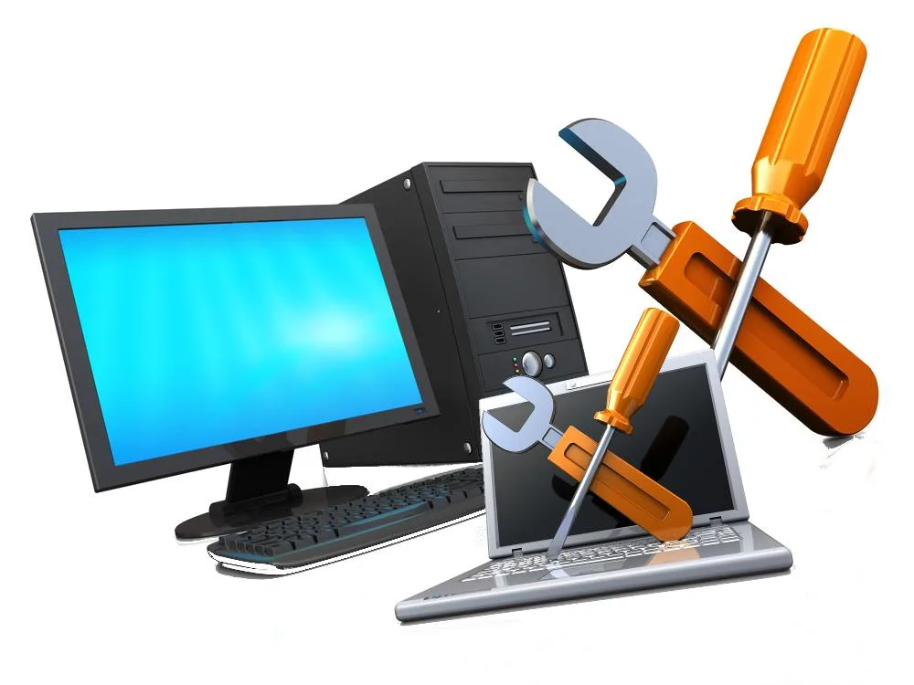
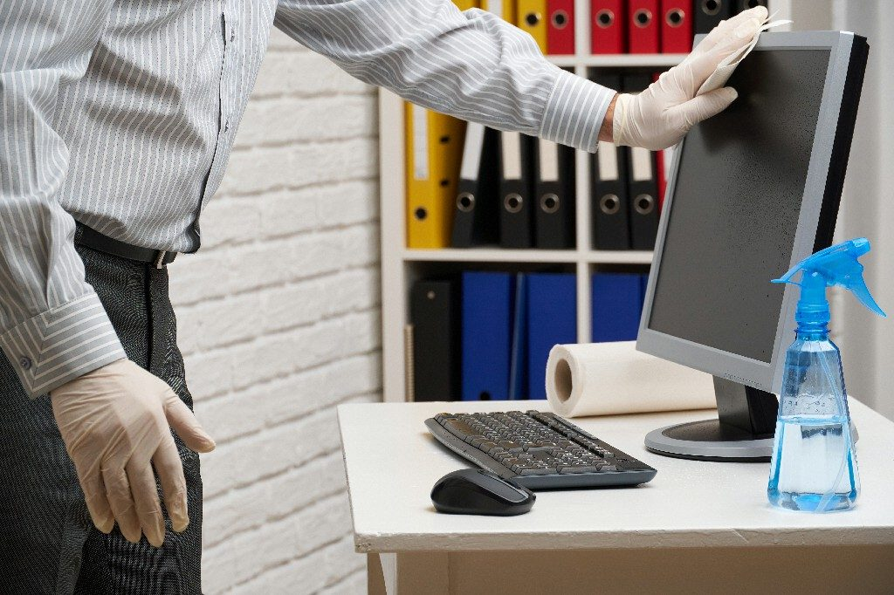
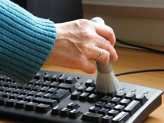
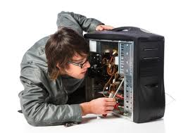
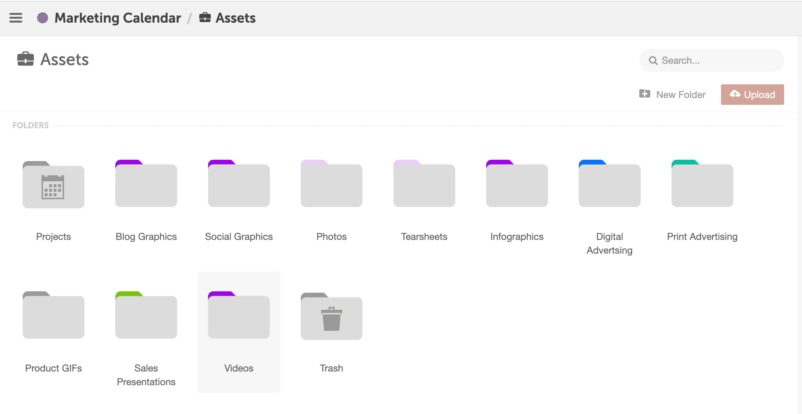
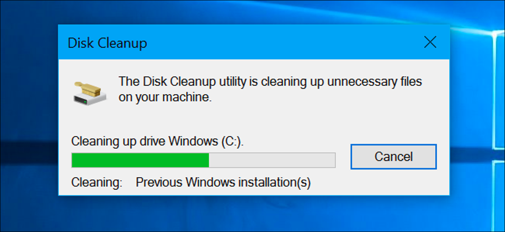

การบำรุงรักษาเครื่องคอมพิวเตอร์

อ้างอิงรูปภาพ : https://www.indiamart.com/
อ้างอิงวิดีโอ Anubanssk School: https://www.youtube.com/watch?v=713KJiIfo2w&t=79s
1.การเลือกสถานที่วางคอมพิวเตอร์ให้ถูกหลัก
 เครื่องคอมพิวเตอร์ ต้องใช้งานตลอดเวลา อาจจะมีความร้อนสะสมได้ จนเสื่อมสภาพเร็วได้ ทางที่ดีการแก้ปัญหานี้ควรเริ่มจากตำแหน่งที่วางคอม ไม่ควรวางชิดกำแพงมากเกินไป ควรวางคอมพิวเตอร์ห่างจากกำแพงอย่างน้อย 1 ฟุต เพราะเมื่อใช้งานคอมพิวเตอร์แล้วจะเกิดความร้อน การวางชิดกำแพงจะทำให้ไม่สามารถระบายความร้อนได้ดี ส่งผลให้เครื่องคอมพิวเตอร์จะมีอุณหภูมิสูงขึ้น และเป็นสาเหตุที่สำคัญที่ทำให้คอมพิวเตอร์ทำงานหนัก จนเสียได้ ส่วนโน้ตบุ๊ค
ควรยกระดับด้านล่างของโน้ตบุ้คให้มีช่องว่างระบายอากาศด้านล่างด้วย เนื่องจากโน้ตบุ้คจะมีความร้อนที่ สูงกว่าคอมพิวเตอร์ทั่วไป แนะนำให้หาพัดลมตัวเล็กๆ หรือพัดลมตั้งพื้นเป่าจะไว้เพื่อระบายความร้อนได้
เครื่องคอมพิวเตอร์ ต้องใช้งานตลอดเวลา อาจจะมีความร้อนสะสมได้ จนเสื่อมสภาพเร็วได้ ทางที่ดีการแก้ปัญหานี้ควรเริ่มจากตำแหน่งที่วางคอม ไม่ควรวางชิดกำแพงมากเกินไป ควรวางคอมพิวเตอร์ห่างจากกำแพงอย่างน้อย 1 ฟุต เพราะเมื่อใช้งานคอมพิวเตอร์แล้วจะเกิดความร้อน การวางชิดกำแพงจะทำให้ไม่สามารถระบายความร้อนได้ดี ส่งผลให้เครื่องคอมพิวเตอร์จะมีอุณหภูมิสูงขึ้น และเป็นสาเหตุที่สำคัญที่ทำให้คอมพิวเตอร์ทำงานหนัก จนเสียได้ ส่วนโน้ตบุ๊ค
ควรยกระดับด้านล่างของโน้ตบุ้คให้มีช่องว่างระบายอากาศด้านล่างด้วย เนื่องจากโน้ตบุ้คจะมีความร้อนที่ สูงกว่าคอมพิวเตอร์ทั่วไป แนะนำให้หาพัดลมตัวเล็กๆ หรือพัดลมตั้งพื้นเป่าจะไว้เพื่อระบายความร้อนได้
2.การจัดระเบียบอุปกรณ์เกี่ยวกับไฟฟ้า
 ควรวางสายไฟให้เป็นระเบียบเรียบร้อย ไม่กีดขวางทางเดิน เพราะหากใครบังเอิญมาเตะสายไฟ จนเครื่องดับแบบกะทันหัน คอมพิวเตอร์จะเสื่อมสภาพก่อนเวลาแน่นอน สิ่งที่แนะนำเพิ่มเติมเกี่ยวกับเรื่องไฟฟ้าคือ ควรมีระบบสำรองไฟ และใช้ปลั๊กไฟที่มีคุณภาพ ไม่ชำรุดเสียหาย ป้องกันปัญหาไฟกระชาก หรือไฟไม่เสถียร
ควรวางสายไฟให้เป็นระเบียบเรียบร้อย ไม่กีดขวางทางเดิน เพราะหากใครบังเอิญมาเตะสายไฟ จนเครื่องดับแบบกะทันหัน คอมพิวเตอร์จะเสื่อมสภาพก่อนเวลาแน่นอน สิ่งที่แนะนำเพิ่มเติมเกี่ยวกับเรื่องไฟฟ้าคือ ควรมีระบบสำรองไฟ และใช้ปลั๊กไฟที่มีคุณภาพ ไม่ชำรุดเสียหาย ป้องกันปัญหาไฟกระชาก หรือไฟไม่เสถียร
3.วิธีทำความสะอาดคอมพิวเตอร์
ในส่วนของจอมอนิเตอร์ (Monitor) และตัวเครื่องคอมพิวเตอร์
สำหรับจอมอนิเตอร์ อาจจะไม่ต้องทำบ่อยมาก เพียงปีละ 2 ครั้งก็พอ เริ่มจากปิดเครื่องให้เรียบร้อย ฉีดน้ำยาทำความสะอาดบนผ้าพอหมาด เช็ดให้ทั่วทั้งหน้าจอ ขอบจอมอนิเตอร์และตัวคอมพิวเตอร์ ระวังอย่าให้น้ำหยดลงอุปกรณ์คอมพิวเตอร์โดยตรง
แป้นพิมพ์หรือคีย์บอร์ด ก่อนทำความสะอาด ถอดสายที่เสียบกับตัวเครื่องให้เรียบร้อย จากนั้นใช้แปรงทำความสะอาดแป้นพิมพ์ ลองยกแป้นพิมพ์คว่ำกลับหัวแล้วเขย่าเบา ๆ เผื่อมีเศษอะไรติดอยู่ภายใน ใช้เครื่องเป่าลมทำความสะอาดอีกครั้ง ปิดท้ายด้วยผ้าหรือสำลีชุบน้ำยาทำความสะอาดเช็ดให้ทั่ว รอจนกว่าจะแห้งสนิทถึงใช้งานใหม่ได้
เมาส์ ถอดสายเสียบเชื่อมต่อ ทำความสะอาดโดยใช้ผ้าชุบน้ำยาทำความสะอาดเช็ดจนทั่ว สามารถทำได้บ่อย เนื่องจากเมาส์เป็นอุปกรณ์ที่สกปรกง่ายมากและต้องหยิบใช้บ่อย

ความสะอาดเป็นสิ่งสำคัญ ซึ่งผู้ใช้งานสัมผัสบ่อย บางทีเชื้อโรคอาจจะเข้าสู่ร่างกายได้ ฉะนั้นการดูแลรักษา ควรเริ่มต้นการการทำความสะอาด เริ่มได้ไม่ยาก แต่ต้องทำอย่างถูกวิธี ก่อนการทำความสะอาดทุกครั้งควรถอดปลั๊กไฟให้เรียบร้อย ควรปิดเครื่องทิ้งไว้ 5 นาที ก่อนลงมือทำความสะอาด หาผ้าสะอาดชุบน้ำเปล่าหมาดๆ อย่าให้เปียก หรือมีน้ำยาทำความสะอาดมาเช็ดส่วนต่างๆในส่วนของจอมอนิเตอร์ (Monitor) และตัวเครื่องคอมพิวเตอร์
สำหรับจอมอนิเตอร์ อาจจะไม่ต้องทำบ่อยมาก เพียงปีละ 2 ครั้งก็พอ เริ่มจากปิดเครื่องให้เรียบร้อย ฉีดน้ำยาทำความสะอาดบนผ้าพอหมาด เช็ดให้ทั่วทั้งหน้าจอ ขอบจอมอนิเตอร์และตัวคอมพิวเตอร์ ระวังอย่าให้น้ำหยดลงอุปกรณ์คอมพิวเตอร์โดยตรง
แป้นพิมพ์หรือคีย์บอร์ด ก่อนทำความสะอาด ถอดสายที่เสียบกับตัวเครื่องให้เรียบร้อย จากนั้นใช้แปรงทำความสะอาดแป้นพิมพ์ ลองยกแป้นพิมพ์คว่ำกลับหัวแล้วเขย่าเบา ๆ เผื่อมีเศษอะไรติดอยู่ภายใน ใช้เครื่องเป่าลมทำความสะอาดอีกครั้ง ปิดท้ายด้วยผ้าหรือสำลีชุบน้ำยาทำความสะอาดเช็ดให้ทั่ว รอจนกว่าจะแห้งสนิทถึงใช้งานใหม่ได้
เมาส์ ถอดสายเสียบเชื่อมต่อ ทำความสะอาดโดยใช้ผ้าชุบน้ำยาทำความสะอาดเช็ดจนทั่ว สามารถทำได้บ่อย เนื่องจากเมาส์เป็นอุปกรณ์ที่สกปรกง่ายมากและต้องหยิบใช้บ่อย
4.วิธีเป่าฝุ่นหรือกำจัดฝุ่นที่อยู่บนตัวเครื่อง
สำหรับการดูแลเรื่องฝุ่น แนะนำให้ใช้แปลงทา สีที่มีขนอ่อน พราะหน้าจอหรือตัวเครื่องบางมากใช้แปรงที่มีขนหนาอาจทำให้เป็นรอยได้ แล้วก่อนทำความสะอาดควรใส่หน้ากากเพื่อป้องกันการฟุ้งกระจายของฝุ่นละออง หากใครมีเครื่องเป่าฝุ่น หรือเป่าลม สามารถเป่าเครื่องได้เพื่อไล่ฝุ่นออกจากคอมพิวเตอร์

ไม่ควรปล่อยให้คอมพิวเตอร์มีฝุ่นมากเกาะมากเกินไป ปัญหาเรื่องฝุ่นมีกระจัดกระจายอยู่ในทุกๆที่ ฝุ่นผงที่เกาะติดอยู่บนแผงวงจร ของคอมพิวเตอร์ ทำหน้าที่เสมือนฉนวนป้องกันความร้อน ทำให้ความร้อนที่เกิดขึ้นในระบบ ไม่ สามารถระบายออกสู่สภาพแวดล้อมภายนอก นอกจากนี้อาจไปอุดตันช่องระบายอากาศของเพาเวอร์ ซัพพลายหรือฮาร์ดดิสก์หรืออาจเข้าไปอยู่ระหว่างแผ่นดิสก์กับหัวอ่านทำให้แผ่นดิสก์หรือหัวอ่านเกิดความ เสียหายได้สำหรับการดูแลเรื่องฝุ่น แนะนำให้ใช้แปลงทา สีที่มีขนอ่อน พราะหน้าจอหรือตัวเครื่องบางมากใช้แปรงที่มีขนหนาอาจทำให้เป็นรอยได้ แล้วก่อนทำความสะอาดควรใส่หน้ากากเพื่อป้องกันการฟุ้งกระจายของฝุ่นละออง หากใครมีเครื่องเป่าฝุ่น หรือเป่าลม สามารถเป่าเครื่องได้เพื่อไล่ฝุ่นออกจากคอมพิวเตอร์
5.ตรวจเช็คความเรียบร้อยภายใน ตัวเครื่องคอมพิวเตอร์

สำหรับเครื่องตั้งโต๊ะ การตรวจเช็คนี้อาจจะยุ่งยากหน่อย เพราะต้องทำการเปิดฝาเครื่องคอมพิวเตอร์ โดยจะต้องไขน็อตที่ล็อกฝาข้างอยู่ แต่สำหรับโน้ตบุ๊ค ก็หาวิธีเพื่อนระบายความร้อนได้ง่ายกว่า วิธีการควรตรวจเช็คพัดลมระบายความร้อนและ ควรตรวจเช็คพัดลมระบายความร้อน และสายไฟที่อยู่ภายในยังอยู่ ในสภาพที่ใช้งานได้ดีอยู่หรือเปล่า เพราะความร้อนก็เป็นอีกหนึ่งสาเหตุที่ทำให้คอมพิวเตอร์เสียได้เพราะอุปกรณ์สึกหรอ ความร้อน ที่เป็นสาเหตุทำให้อมพิวเตอร์มีปัญหา ส่วนใหญ่เกิดจากความร้อนของอุปกรณ์ อิเล็กทรอนิกส์บนเมนบอร์ดของคอมพิวเตอร์เอง
วิธีแก้ปัญหา คือ จะต้องรีบระบายความร้อนที่เกิดจาก อุปกรณ์ต่างๆ ออกไปให้เร็วที่สุด พัดลมระบายความร้อนทุกตัวต้องอยู่ในสภาพดี 100 % ใช้เพาเวอร์ซัพพลาย ในขนาดที่ถูกต้อง หลีกเลี่ยงการตั้งที่แดดส่องถึงเป็นเวลานาน
1.วิธีจัดการไฟล์ที่ไม่ได้ใช้แล้วหรือ ไม่สำคัญ
สำหรับไฟล์งานต่างๆ ที่เราเก็บไว้ในเครื่องคอมพิวเตอร์ หรือดาวน์โหลดมา หากไม่ได้ใช้งานแล้ว หรือไม่สำคัญก็ควรลบทิ้งออกจากเครื่องคอมพิวเตอร์บ้าง เพราะจะทำให้ไหนักเครื่อง เป็นการเคลียร์ส่วนของหน่วยความจำ จะได้พร้อมและมีทีว่างรับ ข้อมูลใหม่
2.จัดระเบียบโฟลเดอร์ต่างๆ และลบโปรแกรมที่ไม่ได้ใช้งานทิ้ง

การจัดระเบียบไฟล์และโฟลเดอร์ ต่างๆให้เป็นระเบียบและเรียบร้อย จะช่วยประหยัดทั้งเวลาและช่วยในเรื่องการทำงานของเราได้ด้วย เวลาที่หาไฟล์ต่างๆก็จะสะดวกมากขึ้น เครื่องก็จะทำงานไม่หนักแถมสะดวกในการทำงาน ค้นหาก็ง่ายขึ้น ส่วน โปรแกรมบางโปรแกรมโหลดมา แทบไม่ได้ใช้งานเลย ทำให้หนักเครื่องโดยใช่เหตุ หากเรารู้ว่าโปรแกรมไหนที่เรา ไม่ได้ใช้งานแล้ว หรือเกมส์ต่างๆที่เราลงไว้ในคอมพิวเตอร์ไม่ได้เล่น เราควรจะลบออก เช่นเดียวกับโฟลเดอร์และไฟล์ จะทำให้การไหลรื่นของเครื่องดีขึ้น
3.กำจัดและสแกนไวรัสในคอมพิวเตอร์
ตัวอันตรายไอทีที่ผู้ใช้คอมพิวเตอร์ต้องระวัง มักจะติดมาจากการเชื่อมต่ออินเทอร์เน็ต หรือมาจากอุปกรณ์เชื่อมต่อต่างๆ ลองหาโปรแกรมสแกนไวรัสสักตัวติดตั้งไว้ในคอม เพื่อป้องกันข้อมูลเรา สำหรับคนที่ใช้คอมพิวเตอร์มานานข้อมูลต่างๆรูปภาพไฟล์เพลง งานต่างๆมากมายที่อยู่ในเครื่องมาจากหลากหลายที่ ทำให้มีไวรัสแฝงตัวอยู่ในโฟล เดอร์ต่างๆได้ บางทีเราอาจจะไม่รู้ว่าเจอไวรัส ฉะนั้นติดตั้งโปรแกรมสแกนไวรัส ไว้ เพื่อให้การใช้งานคอมพิวเตอร์ไม่มีปัญหา และอาจจะต้องใช้เวลาในการสแกน ยิ่งเครื่องที่มีข้อมูลเยอะๆ ก็อาจจะใช้เวลาสแกนนานสักหน่อย แต่เพื่อเป็นการป้องกันก็ควรทำบ่อยๆ
4.เอาใจใส่ฮาร์ดดิสก์และสำรองข้อมูล

ฮาร์ดดิสก์ที่ใช้งานควรตรวจสอบ ทำความสะอาดและจัดระเบียบฮาร์ดดิสก์เป็นระยะ ด้วยการ Scan Disk, Disk Cleanup หรือ Disk Defragmenter เพื่อความแน่ใจว่า ทุกสิ่งทุกอย่างยังทำงานได้ดี ไม่มีส่วนไหนขัดข้องและจะราบรื่นอย่างนี้ต่อไป ส่วนการสำรองข้อมูลมีประโยชน์ 2 ประการ คือ เมื่อเกิดเหตุขัดข้อง ข้อมูลของคุณจะไม่สูญหาย และเมื่อเราสำรองไว้ในอุปกรณ์ใดก็ตาม เราก็สามารถลบข้อมูลในเครื่องได้ ทำให้เครื่องทำงานได้เร็วขึ้น ปัจจุบันมี External Harddisk อุปกรณ์บรรจุข้อมูลภายนอกความจุที่มากขึ้น ที่ช่วยให้เราขนย้ายข้อมูลไปเก็บในนี้ได้อย่างรวดเร็ว
5.วินัยการใช้งานหน้าจอคอม
สำหรับข้อนี้จะเป็นเรื่องวินัยหน้าจอของตัวคุณเอง อย่างเช่น หลีกเลี่ยงการรับประทานขนม อาหาร เครื่องดื่ม เพราะบ่อยครั้งเศษอาหาร เศษขนมตกหล่นลงไป บนแป้นพิมพ์ อาจมีมด แมลงสาบ หนู มาร่วมวงด้วยก็ได้ ส่วนเครื่องดื่มต่างๆ หากหกไปโดยอุปกรณ์ ก็ทำให้เกิดความเสียหายได้ ฉะนั้น ห่างไกลไว้เป็นดี และทุกการใช้งานความ หลังจากการใช้งานเสร็จ ความถอดปลั๊กไฟและอุปกรณ์ที่เชื่อมต่อ ไม่ควรเสียบอุปกรณ์เชื่อมต่อ เช่น USB, Flash Drive, Handy Drive หรือใส่แผ่น CD, DVD ค้างไว้ในเครื่อง เพราะทั้งตัวเครื่องคอมพิวเตอร์และอุปกรณ์ดังกล่าว อาจเกิดความเสียหายได้